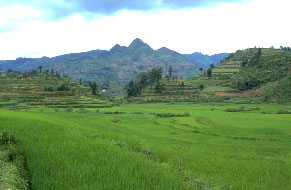
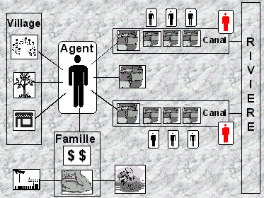
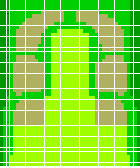
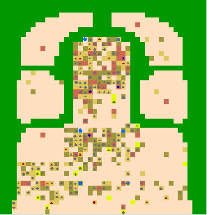

|
CatchScapeLa gestion de l'eau : Une problématique conflictuelle dans les bassins versants du nord ThaïlandeNicolas Becu (ENGREF), Pascal Perez (CIRAD), Andrew Walker (RSPAS-ANU)  En avril 1998, un évènement extraordinaire eut lieu dans le nord de la Thaïlande. Cinq mille paysans Thai vivant dans les plaines du district de Chom Thong manifestaient leur colère et bloquaient l'une des routes principales. Ils demandaient la délocalisation forcée de près de 20 000 villageois des tribus vivant dans le haut du bassin, les accusant d'être responsable de grands déséquilibres écologiques : déforestation, feux de forêt et assèchement des rivières durant la saison sèche. Ce conflit se retrouve à l'état latent dans de nombreux autres bassins de cette région et constitue un enjeu important pour les institutions locales (Walker et Scoccimarro, 1999). CatchScape propose une représentation de ces systèmes, en se focalisant sur les aspects de gestion de l'eau. L'objectif du modèle est de servir d'outil d'aide à la négociation pour les acteurs locaux afin qu'ils puissent définir des solutions concertées.
 Vers un modèle intégréL'une des idées fortes de ce travail était de rompre avec l'approche purement physique de la représentation d'un bassin versant et de replacer les agents fermiers au centre du système. Les différents modules du système, bio-physiques, sociaux ou économiques sont donc greffés autour de l'agent central : l'exploitation agricole familiale. La démarche de modélisation a consisté à définir pour chacune des ressources gérées par les agents la dynamique de cette ressource et ses interactions avec les autres dynamiques. Quatre ressources ont été intégrées dans le modèle : l'Eau, le Travail, l'Argent et le Foncier.
Structure de CatchScape La grille du modèle est une vue aérienne du bassin versant. Chaque cellule est caractérisée par un type d'occupation du sol (forêt, zone de cultures pluviales, bas fond irrigué) et par un type géomorphologique de sol. L'espace est à géométrie variable permettant d'avoir des dimensions de cellules à l'échelle des parcelles agricoles. Les agents agriculteurs sont définis par une série d'attributs, notamment ceux définissant la quantité de chaque ressource à leur disposition. A l'initialisation, les agents reçoivent les quantités de ressources correspondant à leur système de production, puis ces quantités évoluent en fonction des choix effectués. La dynamique bio-physique est constituée d'une part d'un modèle de bilan hydrique distribué, permettant de calculer l'humidité du sol sur chaque parcelle et le stress éventuel des cultures, et d'autre part d'un modèle hydraulique simulant l'écoulement de l'eau dans la rivière puis dans les canaux d'irrigations. Les canaux sont gérés par des chefs de barrage qui déterminent la quantité d'eau prélevée dans la rivière. La gestion individuelle consiste à choisir une culture en début de saison, en privilégiant le riz qui est auto- consommé, à fournir du travail (familial, entre-aide ou rémunéré) pour les activités entreprises, à gérer son portefeuille (dépenses familiales, achat d'intrants ) et occasionnellement à acheter de nouvelles terres ou d'autres améliorations foncières. La gestion de l'eau à l'échelle individuelle consiste uniquement à irriguer ses parcelles en fonction de la quantité disponible dans les canaux. Lors de la saison sèche, lorsque l'offre en eau devient insuffisante, les chefs de barrages ont la possibilité de collaborer et de négocier entre eux, afin de satisfaire leur demande. Plusieurs types d'entre aide sont possibles : des tours d'eau entre deux canaux d'un même périmètre ou bien des négociations entre deux périmètres afin de diminuer les prélèvements en amont.Premiers résultatsLes premiers essais montrent bien une dominance des parties amont quant à la gestion de l'eau et ce d'autant plus que les comportements sont individualistes et que la gestion collective est négligée. CatchScape apparaît comme une bonne base pour explorer le fonctionnement du système et améliorer le modèle selon les principes de la modélisation d'accompagnement (Bousquet et al., 1997). Différents types de scénarios peuvent être simulés tels que des fluctuations de prix, des impacts climatiques ou encore d'autres modes de gestion de l'eau. L'étape suivante de ce travail consiste à utiliser ce modèle auprès des acteurs locaux et de s'en servir, directement ou via un support de communication plus adapté, comme outil d'aide à la négociation. Pour en savoir plus, contactez les auteurs. RéférencesBousquet, F., Barreteau, O., Mullon, C. et Weber, J., 1996. Modélisation d'Accompagnement: Systèmes Multi-Agents et Gestion des Ressources Renouvelables. Quel environnement au XXIème siècle ? Environnement, maîtrise du long terme et démocratie, Abbaye de Fontevraud. Walker, A., Scoccimarro, M., 1999. A ressource Management Unit Approach to Catchment Analysis in Northern Thailand. iCAM Working Paper (2), Australian National University. |